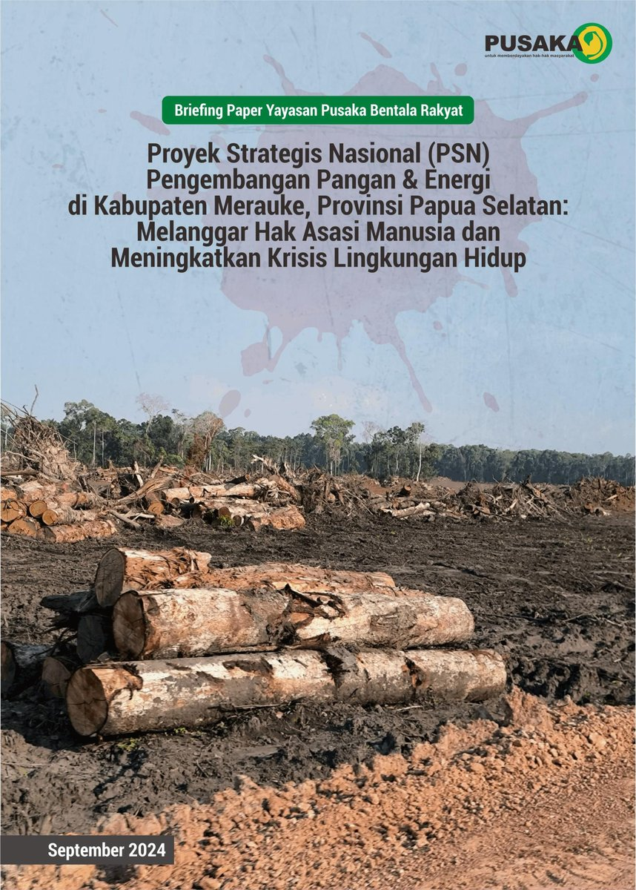
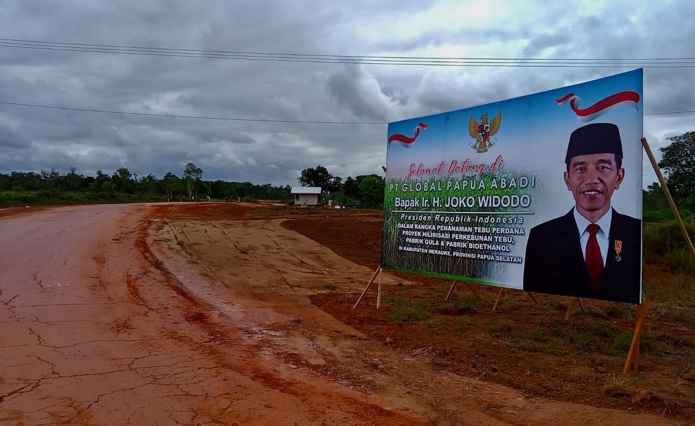
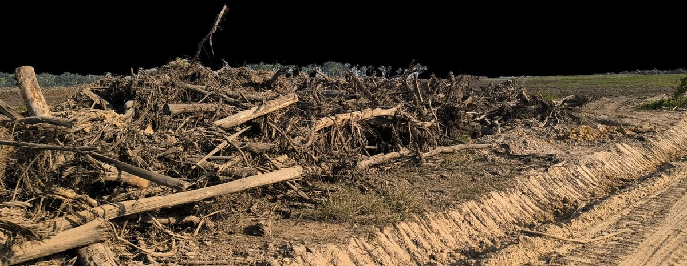
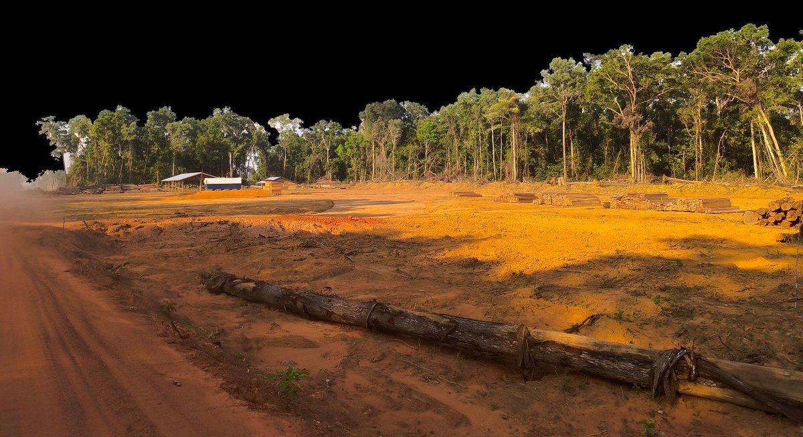
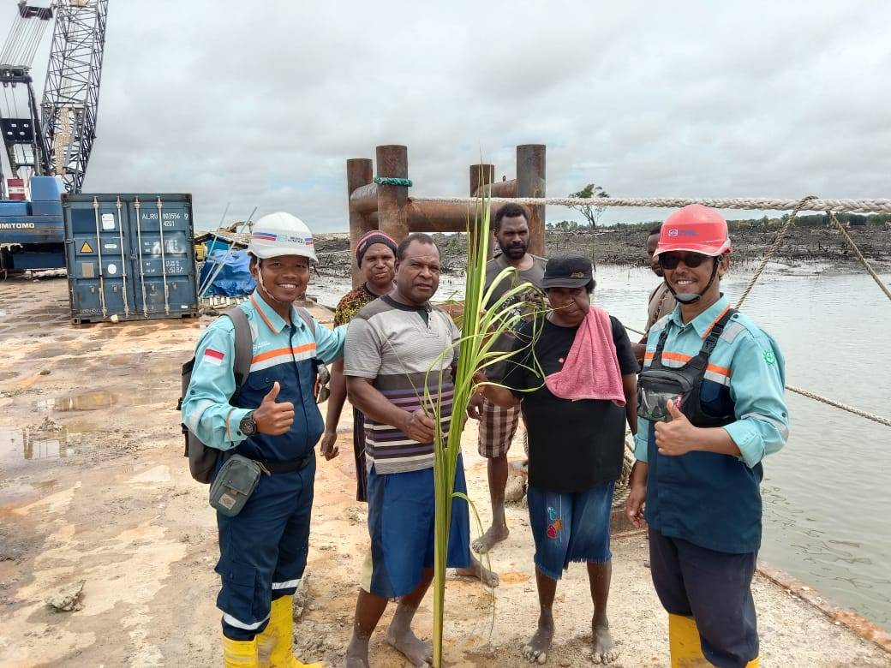

PSN Merauke / Papua Selatan
Pesta Babi:
Ketika Proyek Strategis Nasional Menjadi Bencana

Sebuah narasi peta berdasarkan briefing paper Yayasan Pusaka Bentala Rakyat. Peta ini mengikuti bagaimana proyek pangan dan energi skala jutaan hektar bertemu dengan wilayah adat, hutan, rawa, aparat keamanan, dan perlawanan warga.
Scroll untuk membaca. Setiap bagian mengubah lapisan peta agar klaim utama bisa dilihat dalam ruang, bukan hanya dibaca sebagai angka.
2010 – Akar Masalah
MIFEE Menjadi Pola Awal
Merauke pernah menjadi laboratorium food estate. Pada 2010, MIFEE diluncurkan dengan kajian sosial-lingkungan yang dinilai tidak memadai. BKPRN merekomendasikan pencadangan areal seluas 1.282.833 hektar — lebih dari seperempat Kabupaten Merauke.
Briefing Pusaka menempatkan angka-angka itu sebagai preseden: izin skala luas berada di wilayah adat Malind dan kawasan hutan, sementara musyawarah dan persetujuan bebas masyarakat adat tidak menjadi titik awal.

2023 – Eskalasi
PSN Merauke Memperbesar Skala
Melalui Permenko No. 8/2023, pemerintah memasukkan Kawasan Pengembangan Pangan dan Energi Merauke ke daftar Proyek Strategis Nasional. Di lapangan, proyek itu terbaca sebagai tiga agenda yang bergerak bersamaan:
- Perkebunan tebu & bioetanol: 10 perusahaan, 500.000 ha
- Optimalisasi lahan (Oplah): 6 distrik, 40.000 → 100.000 ha
- Cetak sawah baru: 1.000.000 ha (Kemhan)
~2.000.000 ha target lahan yang disebut dalam rencana
Dasar hukumnya diperkuat melalui Perpres 40/2023 tentang gula dan bioetanol serta Keppres 15/2024 tentang Satgas Gula-Bioetanol.
Konsesi Perusahaan
Satu Lanskap, Sepuluh Izin Tebu
Pada 2023–2024, pemerintah daerah dan nasional menerbitkan PKKPR dan surat rekomendasi pelepasan kawasan hutan bagi sepuluh perusahaan perkebunan tebu. Total areal yang disebut dalam briefing mencapai 541.094 hektar.
- PT Andalan Manis Nusantara 60.000 ha
- PT Semesta Gula Nusantara 60.000 ha
- PT Berkat Tebu Sejahtera 60.000 ha
- PT Agrindo Gula Nusantara 60.000 ha
- PT Sejahtera Gula Nusantara 60.000 ha
- PT Dutamas Resources Intl. 60.000 ha
- PT Global Papua Makmur 59.963 ha
- PT Borneo Citra Persada 50.772 ha
- PT Murni Nusantara Mandiri 39.579 ha
- PT Global Papua Abadi 30.778 ha
Rencana investasi GPA Group disebut mencapai Rp 83 triliun, dengan target produksi gula, bioetanol, dan listrik biomassa. Skala ekonomi itu berhadapan langsung dengan skala ruang hidup masyarakat adat.
Tumpang Susun
Bukan Tanah Kosong
Data BRWA mencatat lima wilayah adat di Merauke seluas sekitar 1,18 juta ha. Analisis tumpang susun Pusaka menunjukkan 316.463 hektar izin perusahaan berada di Wilayah Adat Yei (694.966 ha, teregistrasi BRWA), sementara sisanya berada di wilayah adat Malind.
“Kami Bisa Hidup Tanpa Sawit dan Tebu Tapi Tidak Tanpa Tanah dan Hutan”
— Suku Yei, Kampung Kweel (19/7/2024)
Militerisasi Proyek
Infrastruktur Pangan Masuk Bersama Aparat
Menteri Pertanian menyebut pengendalian pembukaan lahan sejuta hektar berada di bawah kendali Pangdam XVII/Cenderawasih.
Juli 2024: Kapal tongkang Haji Isam menurunkan 232 excavator di Wanam, Distrik Ilwayab. Anggota militer mengawasi penggusuran hutan, rawa, dan lahan adat.
“Tanah ini tidak kosong, tolong hargai kami”
— Warga Wanam
SK KLHK 835/2024 melepas 13.540 ha Hutan Lindung untuk infrastruktur ketahanan pangan Kemhan. Pada peta, pelepasan ini penting karena bekerja sebagai pintu akses, bukan sekadar batas administrasi.

Krisis Lingkungan
Hutan, Rawa, dan Gambut Masuk Area Risiko
Briefing Pusaka mencatat 47% izin perusahaan tebu berada di Hutan Produksi yang Dapat Dikonversi, 32% di Hutan Produksi Terbatas, dan lebih dari 30% berada pada kawasan moratorium PIPPIB.
Risikonya tidak hanya kehilangan tutupan hutan. Pada lanskap rawa dan gambut, pembukaan lahan juga mengubah air, pangan, akses berburu-meramu, dan daya lenting ekologis kampung sekitar.

Pelanggaran HAM
Persetujuan Tidak Bisa Datang Setelah Alat Berat
Menurut briefing, PSN Merauke berjalan tanpa KLHS dan AMDAL serta tanpa konsultasi bermakna dengan masyarakat adat. Kehadiran aparat dalam proses survei, negosiasi, dan pembukaan lahan membuat persetujuan bebas sulit disebut bebas.
Melanggar:
- Hak atas tanah & wilayah adat
- Hak atas lingkungan hidup sehat
- Hak atas pangan & sumber penghidupan
- Hak atas rasa aman & bebas dari intimidasi
- Prinsip FPIC (Free, Prior and Informed Consent)
Pemimpin Suku Yei membuat Surat Pernyataan Bersama pada 7 Mei 2024 untuk menolak proyek. Dalam alur cerita ini, surat itu menjadi dokumen politik: bukti bahwa penolakan sudah dinyatakan sebelum kerusakan meluas.
Siapa di Balik Proyek?
Jejak Korporasi di Balik Konsesi
Briefing Pusaka menelusuri penerima manfaat proyek tebu dan bioetanol ke dua kelompok utama:
- Keluarga Fangiono (First Resources, FAP Agri, Ciliandry Anky Abadi) — mengontrol 9 dari 10 perusahaan melalui Angelia Bonaventure Sudirman, Antoni, dan Silvia Caroline
- Martua Sitorus (KPN Corp, pendiri Wilmar) — melalui Tan Keng Liam
Struktur perusahaan cangkang membuat kepemilikan manfaat sulit dibaca dari nama izin saja. Karena itu, bagian ini menempatkan peta konsesi bersama narasi aktor ekonomi.
Angka Deforestasi
Angka Kerusakan Terus Bergerak
Pemantauan Pusaka menunjukkan pembukaan lahan berlangsung setelah briefing 2024 terbit. Angka berikut memperlihatkan bahwa proyek ini bukan ancaman abstrak, tetapi proses yang terus berjalan.
Total deforestasi untuk infrastruktur pangan dan perkebunan tebu hingga Agustus 2025:
>16.600 ha
Kepmenhut 591/2025 (September 2025) membebaskan 486.939 ha kawasan hutan di Papua Selatan menjadi Areal Penggunaan Lain — mencakup Boven Digoel, Mappi, dan Merauke.
Eskalasi 2025
Percepatan Negara, Perlawanan Warga
Pada 2025, proyek tidak melambat. Kebijakan, struktur militer, dan proses hukum bergerak bersamaan:
- Agustus 2025 — Inpres 14/2025: instruksi percepatan Kawasan Swasembada Pangan, Energi, Air Nasional di Papua Selatan, Kalteng, Kalsel, Sumsel
- Agustus 2025 — Kodam XXIV/Mandala Trikora: Kodam baru berkedudukan di Merauke, bersama 5 Kodam lainnya + 20 Brigif + 100 Yonif
- Agustus 2025 — Uji Materi MK: warga adat Merauke, Rempang, Kaltara, Sultra hadiri uji materi UU Ciptaker terkait PSN
Sementara itu perlawanan terus berlanjut: Yasinta Moiwend memasang palang adat di dermaga Jhonlin Group (26 Jan 2025), Marga Kwipalo melayangkan somasi atas penyerobotan tanah oleh PT MNM (15 Sep 2025).

Rekomendasi
Hentikan PSN Merauke
- Evaluasi dan hentikan PSN Merauke, proyek tebu-bioetanol, dan cetak sawah 1 juta ha
- Audit lingkungan hidup dan cabut izin usaha yang melanggar
- Hormati hak masyarakat adat — lakukan konsultasi bermakna
- Undang Pelapor Khusus PBB untuk Hak Masyarakat Adat ke Papua
- Hentikan pelibatan TNI/Polri dalam proyek komersial
Sumber: Briefing Paper Yayasan Pusaka Bentala Rakyat, September 2024
Data Wilayah Adat: BRWA (brwa.or.id/sig)
Lini Masa: pusaka.or.id/lini-masa • Peta: MapLibre
Eksplorasi Peta
Jelajahi Sendiri
Anda dapat menggeser (drag) dan membesarkan peta. Untuk zoom menggunakan scroll mouse, sentuh/tahan tombol Ctrl/Cmd (atau gunakan tombol + − di ujung kanan atas layar). Anda juga dapat menghidupkan/mematikan lapisan peta di bawah ini.